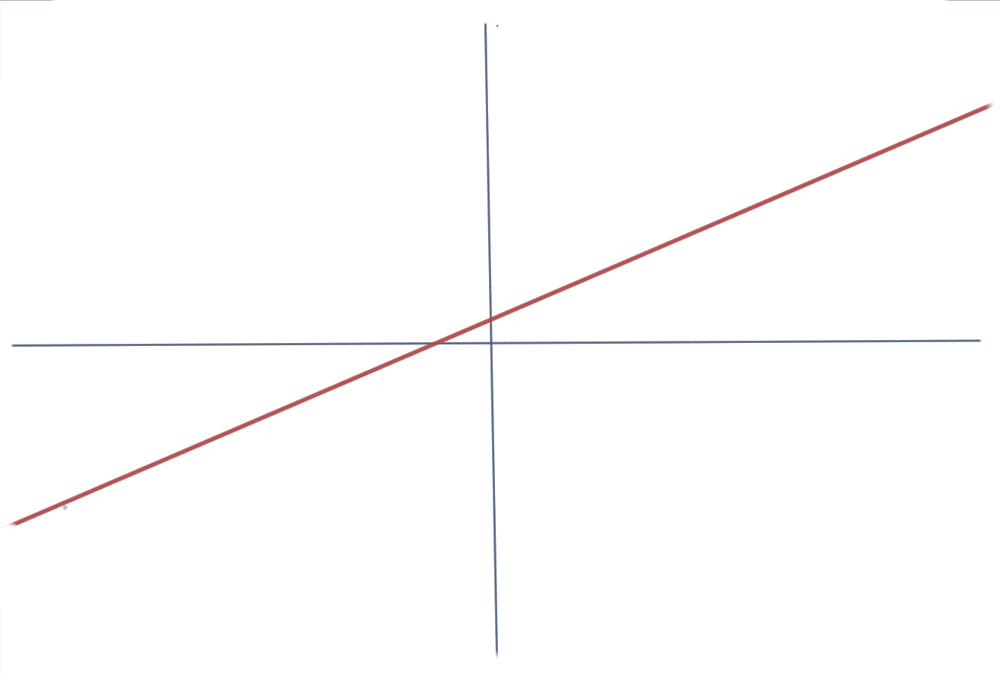
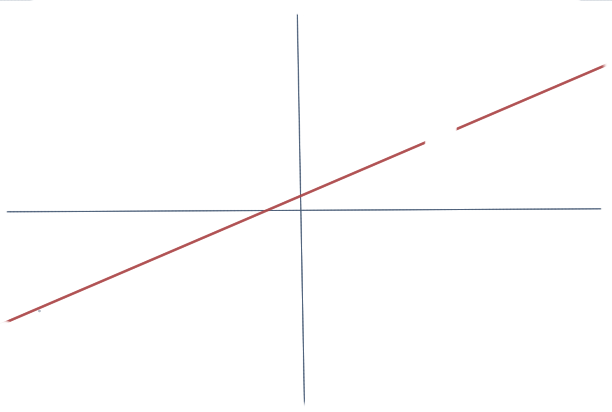
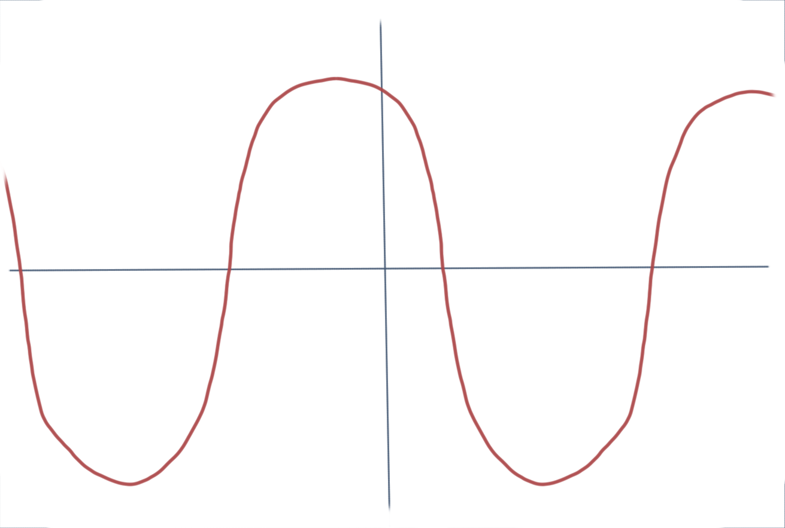
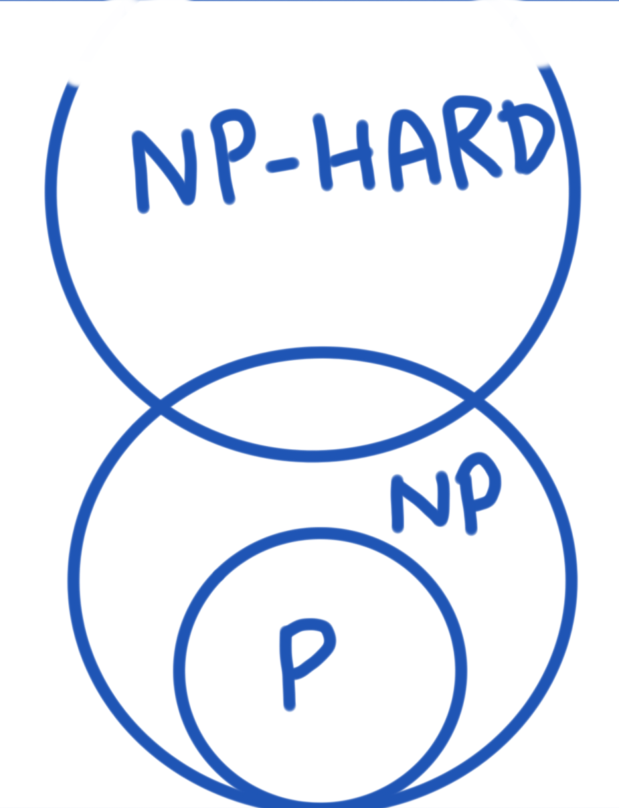
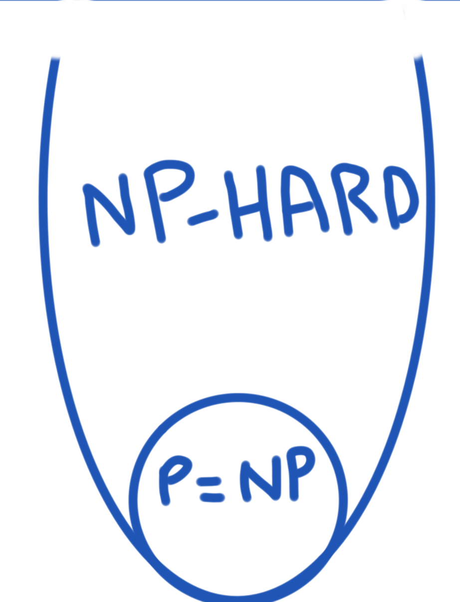

(map reflect shtuff)
=> ramblings by Ahmad Nazir
Classifying things makes it easier for humans to talk about them. It is a process in understanding the fundamental nature of those things and how they relate to each other. This concept is called Taxonomy (initially used for classification of living organisms). Examples are:
I want to focus on the last category i.e categories of Compuational Problems and my intuition behind them.
Before I begin, just want to say that the categories don’t have to be mutually exclusive. The only requirement is that elements in the categories need to share some common characteristics and that doesn’t stop them from belonging to multiple categories.
Categories of problems have been an elusive subject for me and it took me some time to get an intuitive idea of what they mean and how they are different. When I say problem, I am talking about a computational problem which is a question that can be encoded in a form that a computer can understand e.g:
A easy problem is one that doesn’t take a lot of time or memory. For our discussion, I will only focus on the time constraint.
If time is the only constraint, we can defined an easy problem that can be solved quickly..
.. but what does quick mean?
Let’s take run times for instances of two imaginary problems - Problem A and Problem B:
Problem A:
Problem B:
Now, even though the run times for examples of problem B are more than that of problem A, the run times for problem A grows faster than B. If we think of quickness in this way, solving problem B in the general sense is quicker than problem A. If the input size is greater than 12, problem B will run faster than problem A.
This way of thinking about quickness can be expressed mathematically using polynomials. Using polynomials makes the concept formal.. but what usually happens is that the formal version doesn’t do a good enough job at making the idea intuitive.
Instead of explaining what a polynomial is, let me ask you the difference between the following two graphs:
 
or these two:
 
The graphs on the left are continuous and smooth i.e. they don’t break, don’t have any holes in them, they don’t have any points (cusps).. It turns out that polynomials can be visualized as smooth and continuous.. or you can also say that they are smooth and continuous functions since we are visualizing a function of the form y = f(x). I am not saying that all smooth and continuous functions are polynomials but all polynomials look like smooth and continuous functions. Of course, this is an over simplification of what a polynomial is but for me this simplification helps me get some intuition of the idea.
Literally, the word polynomial means multiple terms and mathematically it is a sum of algebraic expressions e.g.
x^2 + 3x + 4Variables in polynomials can only have powers that are whole numbers i.e. 0, 1, 2, 3. So something like 1/x is not a polynomial.
An easy problem is one that can be solved quickly i.e. if we can express the total running time of the problem as a polynomial, that would be an easy problem.
Or In other words, if we can express the relationship of the input size and the total running time as a polynomial, we can categorize it as an easy problem.
Let’s look as an example:
42 exist in the list?In order to find out whether 42 exists in the list, we have to go through all the numbers in the list. So for a list of size 10, we have to look at 10 items at most. For a list of size 1000, we have to look at 1000 items. By increasing one item to the list, we increase one lookup. Hence, we can express the running time as:
running time = k . nwhere:
Since k . n is a polynomial, we categorize this as an easy problem.
This category of problems is known as P problems which stands of Polynomial time and is the official term for this category of problems.
A difficult problem would be one that can’t be solved quickly. However, given a solution it should be possible to quickly verify that the solution is correct.
If we use the same notion of quickness discussed earlier, we can define difficult problems as problems that can be verified in polynomial time.
Such problems are formally known as NP Problems which stands for Non-deterministic polynomial time. Why such a difficult name? Well it comes from the concept of Non-deterministic Turing machines, which are capable of branching at every step of the problem and the whole thing runs in polynomial time. Such a machine is theoretical and only used in thought experiments.
There are problems that can’t even be verified in polynomial time. Such problems are formally known as NP-Hard.
There are some problems that can’t be solved in a general sense i.e. for all possible inputs. If we try to solve them, the computer will take forever to solve and never return an answer. Formally, these problems are known as Undecidable problems.
An example would be, given a computer problem, find out if it has a security bug or not. You can think of some types of computer programs for which you can easily find out whether they have a bug or not. However, you can’t do it for all types of computer programs that can possibly exist.
The most famous impossible problem is known as the Halting problem which is given a program, will it ever solve or will it keep executing? This can’t be solved in a general sense.
Here are the 4 categories discussed:
Categorizing a problem is related to discovering an algorithm for it. We categorize problems as NP or NP-Hard because we are not aware of any algorithms that can run faster. If we discover an algorithm that runs faster, the problem gets a different category assigned to it.
No one knows the answer to this question at the moment. Basically, this boils down to the infamous P = NP millennium problem which asks the question, does there exist a polynomial time algorithm that solves an NP problem? If such an algorithm existed, we wouldn’t need the NP category since the P and NP would be the same as P. Most people think that no such algorithm exists but it hasn’t been mathematically proven yet.
The two different ways to think about the categories overlapping is:
 
If you can prove one or the other, you get a million dollars as a reward for solving this mystery.